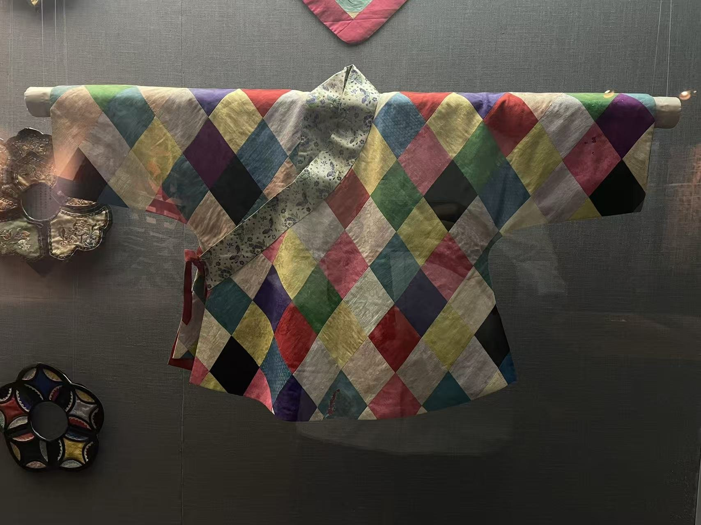
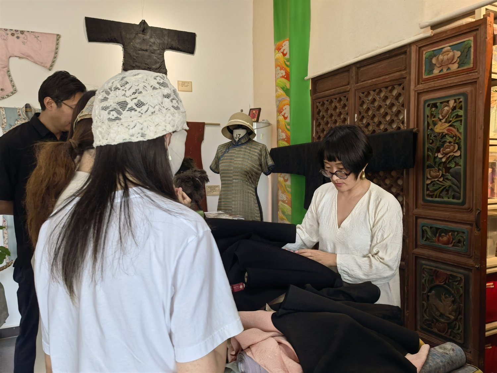
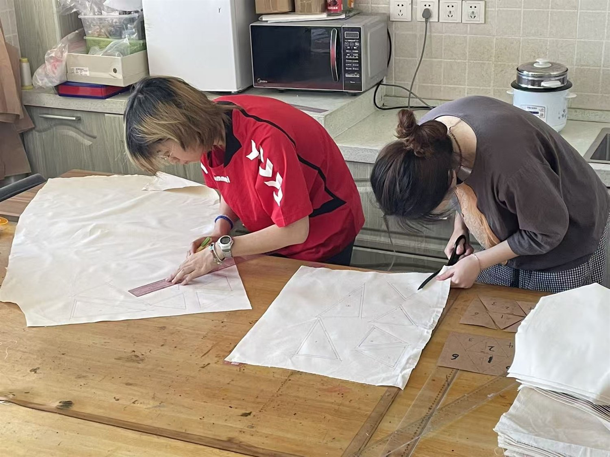
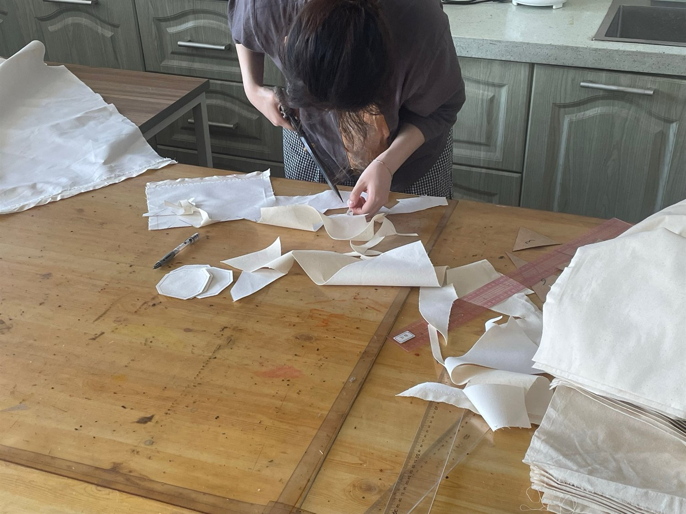
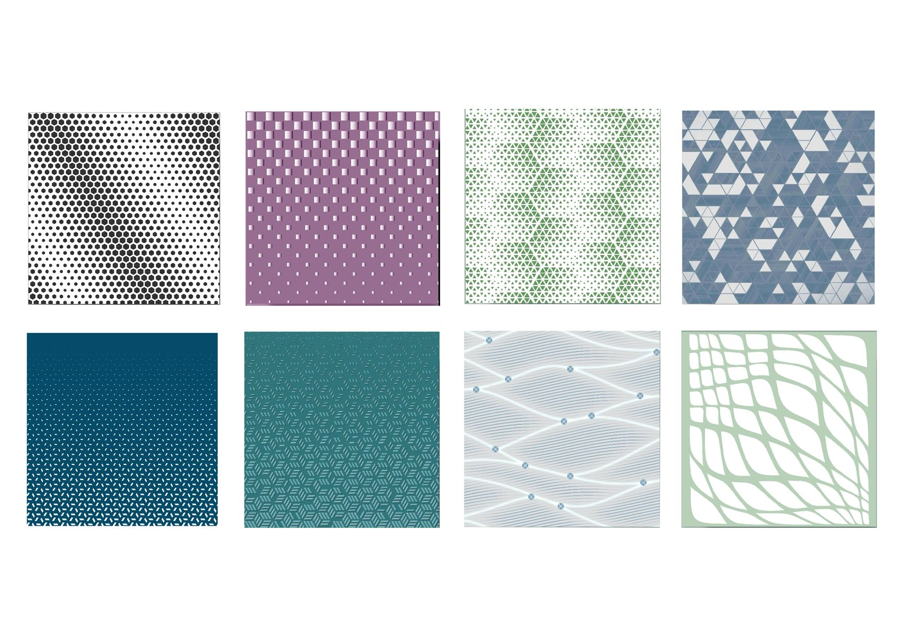
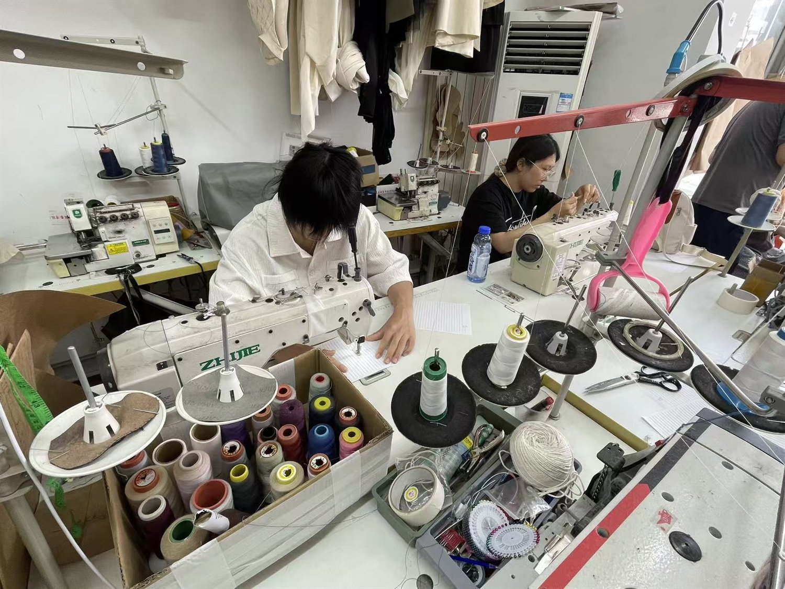
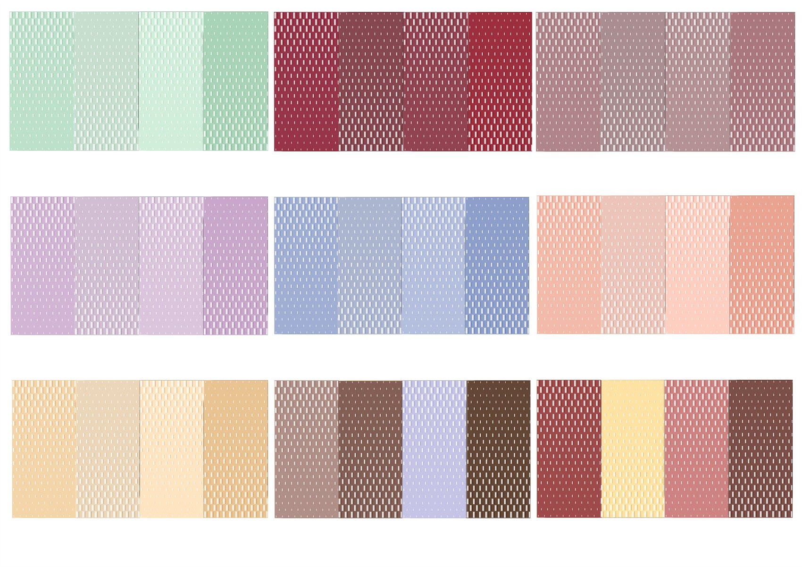
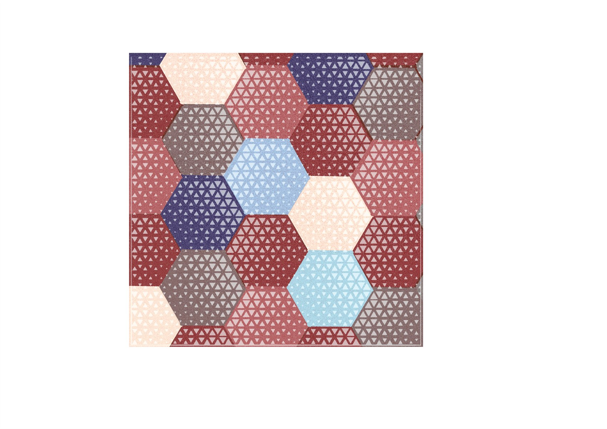

拼布：再设计的骨架
从旧衣拆解出的不同布片，经过配色、比例、方向和肌理对比，重新组成可穿、可用、可展示的布面结构。
- 旧衣拆解与布料分类
- 色块关系与构图设计
- 接缝、补片和模块化组合

Concept
“衣料新生 x 广绣”把旧衣、库存布和零碎布料作为创作起点。学生先观察布料的颜色、纹理、破损、使用痕迹，再用拼布建立新的画面和结构。
刺绣不是最后贴上的装饰，而是参与再设计的语言：它可以连接接缝、强调布料记忆，也可以把广绣中的花鸟、草木、云水和金线质感转译为当代图案。

Craft Focus
从旧衣拆解出的不同布片，经过配色、比例、方向和肌理对比，重新组成可穿、可用、可展示的布面结构。
在拼布完成的结构上，用手针线迹、广绣纹样和局部金线细节，让作品拥有更明确的文化气质和情感锚点。
Workshop Flow

1带来旧衣、边角布或库存布，记录它的颜色、材质、故事和可用面积。

2将衣料拆成可组合的布片，用拼布建立新的版型、图案或表面结构。

3从广绣的花鸟、草木、祥瑞纹样中提取线条和色彩，转化为适合布面的图案。

4用针脚连接拼布接缝、强化重点区域，完成具有个人记忆和地方工艺气质的作品。
Material Study


Collaboration
适合学校课程、非遗体验、亲子工作坊、社区旧衣再生项目与品牌共创活动。